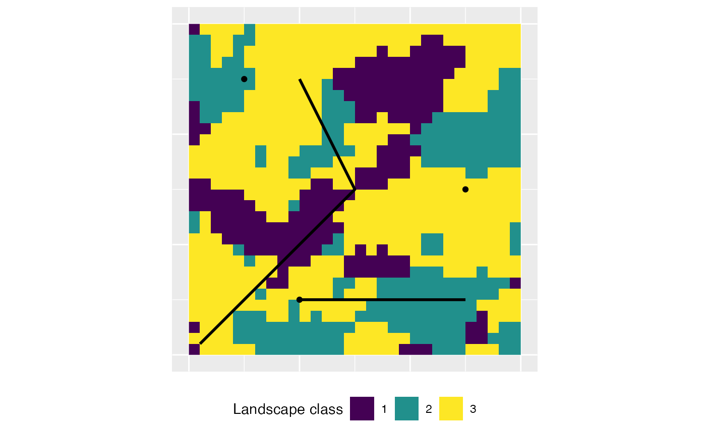
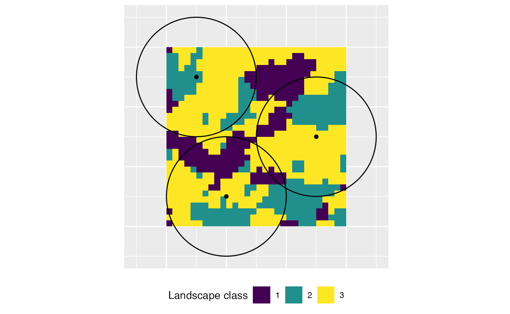

vignettes/articles/guide_sample_lsm.Rmd
guide_sample_lsm.Rmdlandscapemetrics provides several functions to sample metrics at or around sample points. On possible application for this feature could be a study in which the study organism only encounters the landscape within a local neighborhood of sample points. For most functions, sample points can be provided as a 2-column matrix(x- and y-coordinate), SpatialPoints and SpatialLines (sp; Roger et al. 2013) and even sf objects (Pebesma 2018) are supported. For some functions, also SpatialPolygons (i.e. sample plots) can be provided.
First, we create some example sample locations.
# create some example points
points <- matrix(c(10, 5, 25, 15, 5, 25), ncol = 2, byrow = TRUE)
points
## [,1] [,2]
## [1,] 10 5
## [2,] 25 15
## [3,] 5 25
# create some example lines
x1 <- c(1, 5, 15, 10)
y1 <- c(1, 5, 15, 25)
x2 <- c(10, 25)
y2 <- c(5, 5)
sample_lines <- sp::SpatialLines(list(sp::Lines(list(sp::Line(cbind(x1, y1)),
sp::Line(cbind(x2, y2))), ID = "a")))
sample_lines
## class : SpatialLines
## features : 1
## extent : 1, 25, 1, 25 (xmin, xmax, ymin, ymax)
## crs : NAextract_lsm() returns the metrics of all patches in which a sample point is located. However, since this only makes sense for individual patches, it’s only possible to extract patch-level metrics.

Now, it’s straightforward to extract e.g. the patch area of all patches in which a sample point is located. Similar to all functions calculating several landscape metrics, the selected metrics can be specified by various arguments (see list_lsm() for more details). The resulting tibble includes one extra column (compared to calculate_lsm()), indicating the ID of the sample points.
Because three sample points were provided and only the patch area was requested, the resulting tibble also has three rows - one for each sample point. The first and the second sample point are actually located in the same patch and following also the area is identical. The third sample point is located in a much smaller patch. The tibble gives also information about the patch ids and the land-cover classes in which sample points are located.
extract_lsm(landscape, y = points, what = "lsm_p_area")
## Warning: Only using 'what' argument.
## Warning: Please use 'check_landscape()' to ensure the input data is valid.
## # A tibble: 3 × 7
## layer level class id metric value extract_id
## <int> <chr> <int> <int> <chr> <dbl> <dbl>
## 1 1 patch 3 24 area 0.0457 1
## 2 1 patch 3 24 area 0.0457 2
## 3 1 patch 2 10 area 0.0035 3If a line is provided, the results include the patch-level metric for all patches touched by the line. The use of the function is exactly the same as for points.
For each patch, all core area metrics are returned. While the long line touches three patches (2, 12, 20), line two only touches two patches (20, 25). In this example, all core are metrics are selected for extraction.
extract_lsm(landscape, y = sample_lines, type = "core area metric")
## Warning: Please use 'check_landscape()' to ensure the input data is valid.
## # A tibble: 18 × 7
## layer level class id metric value extract_id
## <int> <chr> <int> <int> <chr> <dbl> <dbl>
## 1 1 patch 1 3 cai 48.0 1
## 2 1 patch 2 13 cai 44.9 1
## 3 1 patch 2 16 cai 16.7 1
## 4 1 patch 3 24 cai 49.2 1
## 5 1 patch 1 3 core 0.0071 1
## 6 1 patch 2 13 core 0.0044 1
## 7 1 patch 2 16 core 0.0004 1
## 8 1 patch 3 24 core 0.0225 1
## 9 1 patch 1 3 ncore 3 1
## 10 1 patch 2 13 ncore 2 1
## 11 1 patch 2 16 ncore 3 1
## 12 1 patch 3 24 ncore 11 1
## 13 1 patch 2 13 cai 44.9 2
## 14 1 patch 3 24 cai 49.2 2
## 15 1 patch 2 13 core 0.0044 2
## 16 1 patch 3 24 core 0.0225 2
## 17 1 patch 2 13 ncore 2 2
## 18 1 patch 3 24 ncore 11 2To sample landscape metrics within a certain buffer around sample points, there is sample_lsm(). Now, the size of the buffers around the sample locations must be specified. The functions clips the landscape within the buffer (in other words sample plots) and calculates the selected metrics.
The resulting tibble incldues two extra columns. Again, the id of the sample point is included. Furthermore, the size of the actual sampled landscape can be different to the provided size due to two reasons. Firstly, because clipping raster cells using a circle or a sample plot not directly at a cell center lead to inaccuracies. Secondly, sample plots can exceed the landscape boundary. Therefore, we report the actual clipped sample plot area relative in relation to the theoretical, maximum sample plot area e.g. a sample plot only half within the landscape will have a percentage_inside = 50.

sample_lsm(landscape, y = points, size = 10,
level = "landscape", type = "diversity metric",
classes_max = 3,
verbose = FALSE)
## # A tibble: 27 × 8
## layer level class id metric value plot_id percentage_inside
## <int> <chr> <int> <int> <chr> <dbl> <int> <dbl>
## 1 1 landscape NA NA msidi 0.954 1 75
## 2 1 landscape NA NA msiei 0.868 1 75
## 3 1 landscape NA NA pr 3 1 75
## 4 1 landscape NA NA prd 10000 1 75
## 5 1 landscape NA NA rpr 100 1 75
## 6 1 landscape NA NA shdi 1.02 1 75
## 7 1 landscape NA NA shei 0.932 1 75
## 8 1 landscape NA NA sidi 0.615 1 75
## 9 1 landscape NA NA siei 0.922 1 75
## 10 1 landscape NA NA msidi 0.969 2 75
## # … with 17 more rowsIt’s also possible to construct buffers around lines, however, only if the rgeos (Bivand & Rundel 2018) package is installed. Also, it’s possibe to directly provide SpatialPolygons as sample plots.
Pebesma, E., 2018. Simple Features for R: Standardized Support for Spatial Vector Data. The R Journal, https://journal.r-project.org/archive/2018/RJ-2018-009/
Roger Bivand and Colin Rundel (2018). rgeos: Interface to Geometry Engine - Open Source (‘GEOS’). R package version 0.4-2. https://CRAN.R-project.org/package=rgeos
Roger S. Bivand, Edzer Pebesma, Virgilio Gomez-Rubio, 2013. Applied spatial data analysis with R, Second edition. Springer, NY. http://www.asdar-book.org/